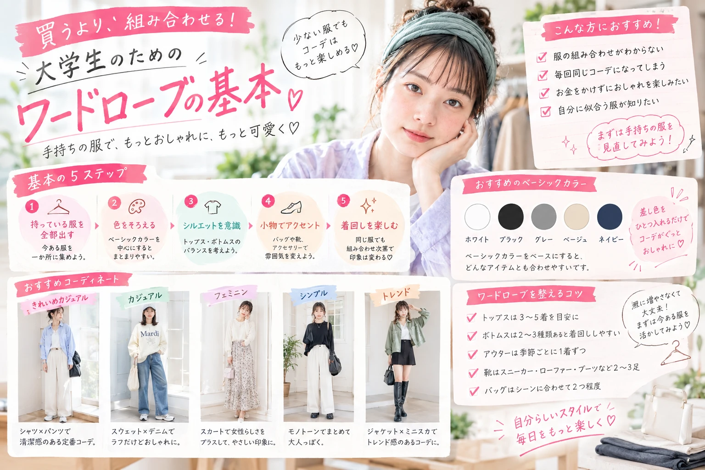

ARTICLES 3
美容記事一覧
気になる美容記事を ゆっくりチェックしてみてください。

キレイは、日常の積み重ね。
メイク・スキンケア・ヘアケア・ ファッションなど、 美容に役立つ記事を紹介します。
気になる美容記事を ゆっくりチェックしてみてください。
Pro Pocket Beautyでは、 メイク・スキンケア・ボディケア・ ヘアケア・ファッションなど、 美容初心者にもわかりやすい記事を掲載しています。